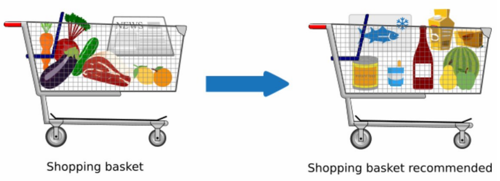

Overview
Association Rule Mining (ARM) is a data mining technique used to identify frequent patterns, associations, and correlations between items in a dataset. The goal of ARM is to discover relationships between different items and to identify the items that tend to co-occur frequently in a dataset. This technique is widely used in market basket analysis, web usage mining, and recommendation systems.
One of the key measures used in ARM is support, which is the proportion of transactions in the dataset that contain both the items of interest. Support measures the popularity of an itemset and helps to identify the most frequent itemsets in the dataset. Another important measure in ARM is confidence, which is the proportion of transactions that contain the consequent item given that they also contain the antecedent item. Confidence measures the strength of the association between two items and helps to identify the most reliable associations in the dataset. Finally, lift is another measure used in ARM that compares the probability of two items co-occurring to the probability of them occurring independently. Lift measures the degree of association between two items and helps to identify the most interesting and significant associations in the dataset. Together, these measures can help to determine how effective the resulting associations are and can be used to guide decision-making in various applications.
Support: $$\text{support}(X) = \frac{\text{number of transactions containing } X}{\text{total number of transactions}}$$ where $X$ is an itemset of interest. Confidence: $$\text{confidence}(X \Rightarrow Y) = \frac{\text{support}(X \cup Y)}{\text{support}(X)}$$ where $X$ is the antecedent itemset and $Y$ is the consequent itemset. Lift: $$\text{lift}(X \Rightarrow Y) = \frac{\text{support}(X \cup Y)}{\text{support}(X) \times \text{support}(Y)}$$ where $X$ is the antecedent itemset and $Y$ is the consequent itemset.
One of the most widely used algorithms for Association Rule Mining is the Apriori algorithm. This algorithm is based on the observation that any subset of a frequent itemset must also be frequent. In other words, if a set of items is frequent, then all of its subsets must also be frequent. The Apriori algorithm works by iteratively generating candidate itemsets of increasing size and pruning those that are infrequent.
The Apriori algorithm has two main steps: the join step and the prune step. In the join step, the algorithm generates candidate itemsets of size $k$ by joining frequent itemsets of size $k-1$. For example, if the frequent itemsets of size 2 are {A,B}, {A,C}, and {B,C}, {C,D} then the candidate itemsets of size 3 are {A,B,C} and {A,C,D}. In the prune step, the algorithm checks the support of each candidate itemset and removes those that are infrequent. The frequent itemsets are then used to generate association rules using the support, confidence, and lift measures.
The Apriori algorithm is an efficient algorithm for mining association rules from large datasets. It uses the concept of the "apriori" property to reduce the number of itemsets that need to be considered and prunes those that are infrequent. This reduces the search space and improves the efficiency of the algorithm. Overall, Association Rule Mining and the Apriori algorithm provide powerful tools for discovering patterns and associations in large datasets.
In this section, the column also_view is used to explore if associations can be drawn between items that a user views while browsing a product in Amazon. We hope to find associations in the browsing behavior of users since similar products are viewed while looking for a product online. Since we have almost 6k rows in our dataset, and each row contains multiple products that have been viewed, we will not be able to look at individual association rules. Rather, we will plot the rules to observe if we are able to mine meaningful associations between products.
Data Prep and Code
Since the data was prepared and cleaned in Python (Data Prep and EDA), we will have to export the data to csv to be able to use it in R. Since we only need the also_view column, we will write that column to a csv in python.
also_viewed = \
merged_df[merged_df.also_view.apply(lambda x: len(x) > 0)].copy()
also_viewed.apply(lambda x: pd.Series(list(x.also_view) + [x.asin]), axis=1)\
.to_csv('also_viewed_basket.csv', index=False)This dataframe can be loaded in R to start working on Association Rules Mining. Link to this file is given below.
dataset = read.transactions('also_viewed_basket.csv',
sep = ',', rm.duplicates = TRUE)
inspect(dataset[1:2]) items
[1] {1059274949,
1059844575,
9791688974,
B00B2HORKE,
B00HFYLR4M,
B00VUW6R2M,
B015DJ4QYI,
B06XQDTXD1,
B078KF8CSX}
[2] {1059274949,
1059844575,
9791688974,
B00B2HORKE,
B00HFYLR4M,
B00VUW6R2M,
B015DJ4QYI,
B06XQDTXD1,
B078KF8CSX} We have the IDs of products that were viewed while browsing.
We will first plot the item frequencies to view what support values can be used for building the rules.
itemFrequencyPlot(dataset, topN = 10)Item frequencies for top 10 items
We see that the most popular item has a support of a little over 0.020. There fore we will use a support of 0.01 for building the association rules.
associa_rules = apriori(data = dataset,
parameter = list(support = 0.01,
confidence = 0.6,
maxlen = 5))
The value of confidence is set to 0.6, and maxlen is set to 5 to prevent very long rules.
Results
The results of the apriori algorithm are stord in associa_rules. Lets explore how our rules look by viewing the top 15 rules by support, confidence and lift.
inspect(sort(associa_rules, by = 'support')[1:15]) lhs rhs support confidence coverage lift count
[1] {B01GCKO9IK} => {B01GCKO9Z8} 0.02071823 1 0.02071823 48.26667 60
[2] {B01GCKO9Z8} => {B01GCKO9IK} 0.02071823 1 0.02071823 48.26667 60
[3] {B01GCKO9IK} => {B004536LUG} 0.02071823 1 0.02071823 48.26667 60
[4] {B004536LUG} => {B01GCKO9IK} 0.02071823 1 0.02071823 48.26667 60
[5] {B01GCKO9IK} => {B002EF2200} 0.02071823 1 0.02071823 48.26667 60
[6] {B002EF2200} => {B01GCKO9IK} 0.02071823 1 0.02071823 48.26667 60
[7] {B01GCKO9Z8} => {B004536LUG} 0.02071823 1 0.02071823 48.26667 60
[8] {B004536LUG} => {B01GCKO9Z8} 0.02071823 1 0.02071823 48.26667 60
[9] {B01GCKO9Z8} => {B002EF2200} 0.02071823 1 0.02071823 48.26667 60
[10] {B002EF2200} => {B01GCKO9Z8} 0.02071823 1 0.02071823 48.26667 60
[11] {B004536LUG} => {B002EF2200} 0.02071823 1 0.02071823 48.26667 60
[12] {B002EF2200} => {B004536LUG} 0.02071823 1 0.02071823 48.26667 60
[13] {B01GCKO9IK, B01GCKO9Z8} => {B004536LUG} 0.02071823 1 0.02071823 48.26667 60
[14] {B004536LUG, B01GCKO9IK} => {B01GCKO9Z8} 0.02071823 1 0.02071823 48.26667 60
[15] {B004536LUG, B01GCKO9Z8} => {B01GCKO9IK} 0.02071823 1 0.02071823 48.26667 60 inspect(sort(associa_rules, by = 'confidence')[1:15]) lhs rhs support confidence coverage lift count
[1] {B01GEW27DA} => {B00PHLM7VW} 0.01381215 1 0.01381215 48.26667 40
[2] {B00UMVW4VA} => {B07CVVM115} 0.01070442 1 0.01070442 93.41935 31
[3] {B07CVVM115} => {B00UMVW4VA} 0.01070442 1 0.01070442 93.41935 31
[4] {B00UMVW4VA} => {B002GYTPAE} 0.01070442 1 0.01070442 93.41935 31
[5] {B002GYTPAE} => {B00UMVW4VA} 0.01070442 1 0.01070442 93.41935 31
[6] {B07CVVM115} => {B002GYTPAE} 0.01070442 1 0.01070442 93.41935 31
[7] {B002GYTPAE} => {B07CVVM115} 0.01070442 1 0.01070442 93.41935 31
[8] {B07GQ7JTGG} => {B07GWZX7BY} 0.01139503 1 0.01139503 87.75758 33
[9] {B07GWZX7BY} => {B07GQ7JTGG} 0.01139503 1 0.01139503 87.75758 33
[10] {B07GQ7JTGG} => {B01G1BVKKA} 0.01139503 1 0.01139503 87.75758 33
[11] {B01G1BVKKA} => {B07GQ7JTGG} 0.01139503 1 0.01139503 87.75758 33
[12] {B07GQ7JTGG} => {B078XY7C1F} 0.01139503 1 0.01139503 87.75758 33
[13] {B078XY7C1F} => {B07GQ7JTGG} 0.01139503 1 0.01139503 87.75758 33
[14] {B07GWZX7BY} => {B01G1BVKKA} 0.01139503 1 0.01139503 87.75758 33
[15] {B01G1BVKKA} => {B07GWZX7BY} 0.01139503 1 0.01139503 87.75758 33 inspect(sort(associa_rules, by = 'lift')[1:15]) lhs rhs support confidence coverage lift count
[1] {B015YHXHWQ} => {B00WL6RDAG} 0.01001381 1 0.01001381 99.86207 29
[2] {B00WL6RDAG} => {B015YHXHWQ} 0.01001381 1 0.01001381 99.86207 29
[3] {B018IMLQDG} => {B014658DS0} 0.01035912 1 0.01035912 96.53333 30
[4] {B014658DS0} => {B018IMLQDG} 0.01035912 1 0.01035912 96.53333 30
[5] {B018IMLQDG} => {B07CPNR79C} 0.01035912 1 0.01035912 96.53333 30
[6] {B07CPNR79C} => {B018IMLQDG} 0.01035912 1 0.01035912 96.53333 30
[7] {B014658DS0} => {B07CPNR79C} 0.01035912 1 0.01035912 96.53333 30
[8] {B07CPNR79C} => {B014658DS0} 0.01035912 1 0.01035912 96.53333 30
[9] {B014658DS0, B018IMLQDG} => {B07CPNR79C} 0.01035912 1 0.01035912 96.53333 30
[10] {B018IMLQDG, B07CPNR79C} => {B014658DS0} 0.01035912 1 0.01035912 96.53333 30
[11] {B014658DS0, B07CPNR79C} => {B018IMLQDG} 0.01035912 1 0.01035912 96.53333 30
[12] {B00UMVW4VA} => {B07CVVM115} 0.01070442 1 0.01070442 93.41935 31
[13] {B07CVVM115} => {B00UMVW4VA} 0.01070442 1 0.01070442 93.41935 31
[14] {B00UMVW4VA} => {B002GYTPAE} 0.01070442 1 0.01070442 93.41935 31
[15] {B002GYTPAE} => {B00UMVW4VA} 0.01070442 1 0.01070442 93.41935 31
Lets observe how many rules have been created.
associa_rulesset of 1123580 rulesWe see that we have a very large number of rules. Any kind of visualization would be very difficult to understand with these many rules. So let's create a subset of rules that we think may be of interest and observe their properties.
subrules_lift <- sort(associa_rules, by = 'lift')[1:50]
subrules_conf <- sort(associa_rules, by = 'confidence')[1:50]
subrules_sup <- sort(associa_rules, by = 'support')[1:50]
subrules <- union(subrules_lift, subrules_conf)
subrules <- union(subrules, subrules_sup)
subrulesset of 137 rulesThis is a much more manageable number. Now lets visualize how good these rules are by plotting the support, confidence and lifts.
plot(subrules, measure=c("support", "lift"), shading = "confidence")We see that most of these rules have a confidence of 1. It also interesting to observe that as the support increase, the lift decreases. However, the values of lift are quite high and almost all are greater that 45. We can therefore say that the association between these items is strong.
Lets visualize these rules using a graph to observe how the elements are realetd within the rules.
plot(subrules, method="graph", engine="htmlwidget", measure = "lift")The red shades in the graph indicate the lift of the rules plotted.
We observe a few cluster of rules with item highlt linked to one another. These clusters indicate that these items are frequently observed in the datset. Moreover, the lift and confidence values indicate that these are good rules with significant associations.
Let us also visualize a few rules that have the maximum support in our dataset. We will select 40 rules to ensure that the graphs are readable
subrules_sup_40 <- sort(associa_rules, by = 'support')[1:40]
plot(subrules_sup_40, method = "graph")Again we observe 3 clusters with interconnected items. The lift values for these rules are all between 45 to 60. Although these are the highest lift values in our data, the values are large enough to say that these rules have a good association between items.
As a final plot, lets plot all the rules in our dataset in a 2D histogram to see how good our rules are and to check the utility of these rules for applications such as recommending items to users while browsing for products.
rule_df <- DATAFRAME(associa_rules)
ggplot(rule_df, aes(x=support, y=lift)) +
geom_bin2d() + theme_bw()This plot shows that we have a large number of rules with high values of lift and relatively good values of support. These rules are useful in extracting meaningful information about how items are related to each other in the dataset. We can use appropriate filters to select the rules that would have the specific information needed for various analysis.
Conclusion
In the analysis, it is observed that our data generates about 1.1 million association rule. Although not all rules are very useful, if we are able to find just a few hundred association rules that are meaningful based on their support, confidence and lift values, they could help explain several trends in the way users look for items while browsing. These observations can further be utilized to determine what products are appealing to users and what products people are likely to look for given they are on a certain page. This analysis can also be used to explain why certain products may be performing poorly in the market.
Out of the 1.1 million rules that are generated, the results and the visualizations provide evidence that a large number of rules are useful. We observe good lift and confidence in out plots and the graphs show tightly grouped clusters confirming that groups of items are highly associated. These rules coupled with popularity and review metrics can be used to craete powerful recommendations for users to enhance the user experience and help make useful products more accessible.
Further although most of the rules are expected to show associations between closely related products, we can certainly find linking rules that connect two huge clusters. These rules can help explain and understand the relatioships between products, in say different categories, and provide deeper understanding of user behavior on the platform by explaining why these categories may be linked and under what scenarios.
The analysis helped discover several ways in which association rules mining on large datasets can be analysed through visualization. It helped inderstand how the quality of rules can be assessed based on metrics of support, confidence and lift when each rule cannot be individually studied.
In conclusion, our analysis of the Amazon reviews dataset using Association Rule Mining (ARM) has provided valuable insights into the relationships and patterns within the data. By using measures such as support, confidence, and lift, we were able to identify frequent itemsets and generate meaningful association rules. These insights can be useful for businesses to better understand customer preferences and improve their product offerings. For example, businesses can use these association rules to identify which products are frequently purchased together and offer them as a bundle, or suggest complementary products to customers.
Overall, the ARM analysis has demonstrated the usefulness of this technique for exploring and understanding complex datasets, and can be used in a wide range of applications such as market basket analysis, recommendation systems, and customer segmentation. These insights can help businesses make data-driven decisions to improve their offerings and gain a competitive edge in the market.